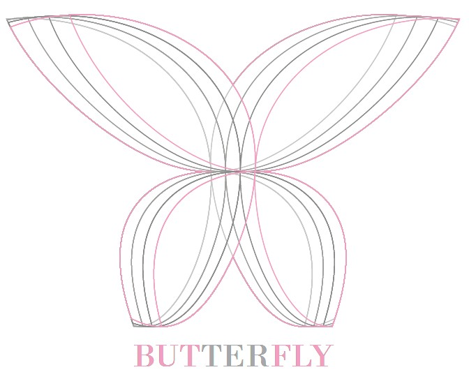
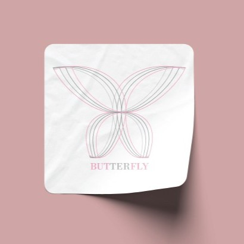

Tento návrh vznikl jako experiment s geometrickými tvary, liniemi a jemnou pastelovou barevností. Cílem bylo vytvořit abstraktní symbol, který působí lehce, harmonicky a esteticky vyváženě. Logo není navázané na nějakou konkrétní značku, ale slouží jako ukázka práce s kompozicí, rytmem a vizuální metaforou.

Motiv motýla je zde zpracovaný pomocí překrývajících se křivek, které vytvářejí dojem pohybu a elegance. Kombinace šedé a růžové barvy podporuje jemnost a moderní charakter celého vizuálu.

Tento návrh prezentuje moji schopnost pracovat s abstrakcí, vytvářet vizuální symboly a hledat estetické řešení bez nutnosti konkrétního zadání. Je to ukázka volné tvorby, která rozvíjí cit pro tvar, barvu a vizuální harmonii.